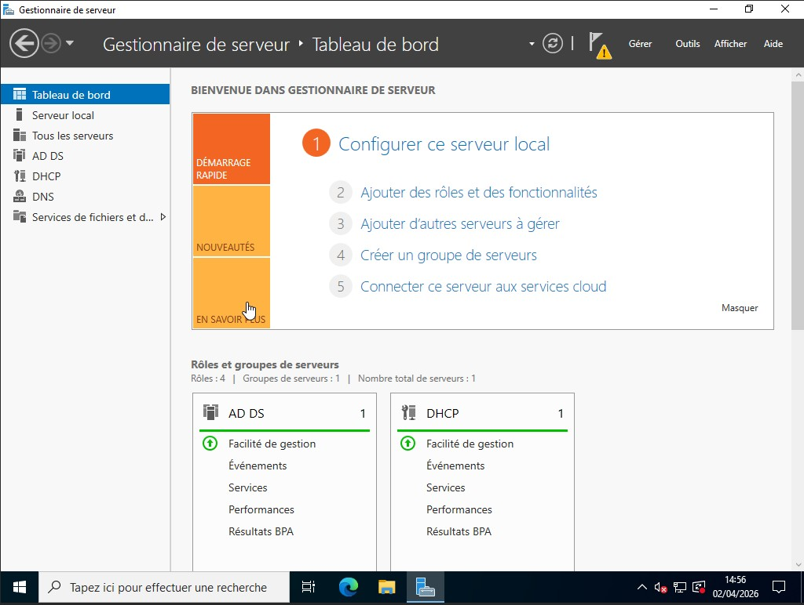

Contexte du projet
Afin de centraliser la gestion du parc informatique et de sécuriser les accès, j'ai déployé un environnement domaine sous Windows Server. L'enjeu était de structurer les comptes utilisateurs et d'automatiser la configuration des postes clients via des stratégies de groupe.
Mes missions réalisées
- Installation et promotion d'un serveur Windows en tant que Contrôleur de Domaine (AD DS).
- Création d'une arborescence logique d'Unités Organisationnelles (OU) pour refléter la structure de l'entreprise.
- Création, modification et gestion des comptes utilisateurs et des groupes de sécurité.
- Déploiement de Stratégies de Groupe (GPO) : restriction des panneaux de configuration, paramétrage de fonds d'écran, et mappage de lecteurs réseaux (partages de fichiers).
- Mise en place de scripts d'automatisation (PowerShell) pour la création de comptes en masse.